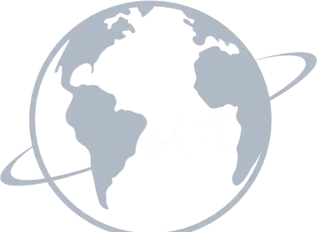
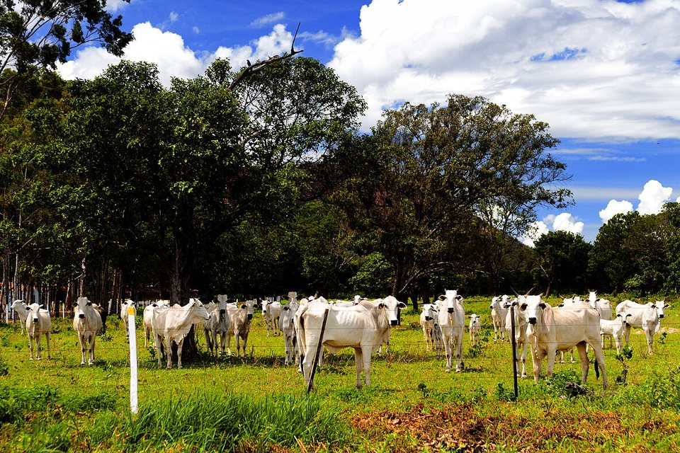
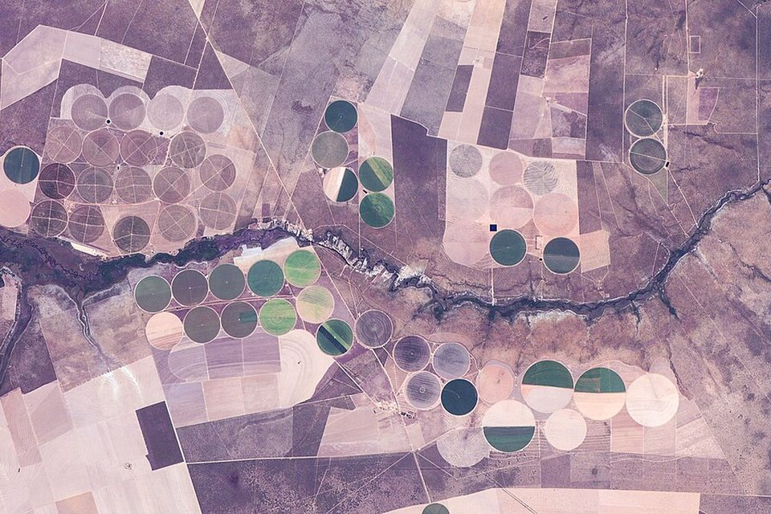
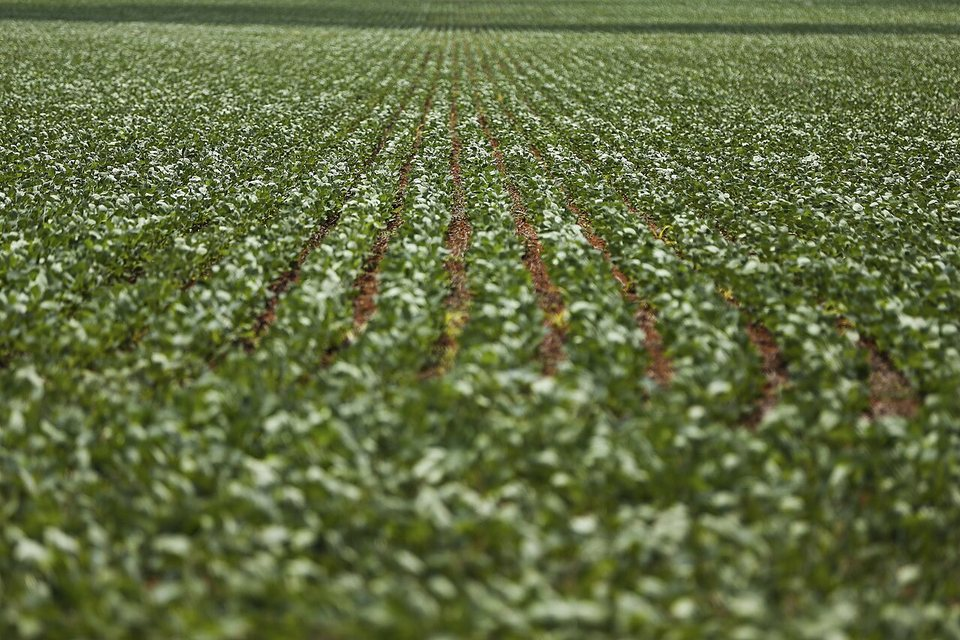

Licenciamento e regularização ambiental
Licenciamento ambiental rural: pecuária, agricultura irrigada e de sequeiro
Licença, dispensa ou regularização da atividade agropecuária na SEMAD-GO, junto com CAR, outorga e passivos do imóvel.
O que é
Na SEMAD-GO, o licenciamento de agricultura e pecuária é feito pela gerência de atividades agropecuárias (Gesol), pelo Sistema Ipê. O que define se a atividade precisa de licença, de licença simplificada ou se é dispensada é o tipo de atividade, o porte e a localização. Fazemos esse enquadramento, reunimos o que o órgão pede e cuidamos para que CAR, outorga, Reserva Legal e passivos estejam em ordem, porque é isso que costuma travar o processo.
Modalidades

Foto: Carlos Ebert Pecuária
Cria, recria e engorda a pasto, semiconfinamento e confinamento. Enquadramento pelo rebanho e pela área, bebedouros e barragens, manejo de dejetos quando há confinamento, e APP cercada.

Foto: Axelspace Corporation Agricultura irrigada
Pivô central e outros sistemas. O licenciamento anda junto com a outorga: área irrigada, captação ou barragem, e plano de uso e conservação do solo.

Foto: Marcelo Camargo/Agência Brasil Agricultura de sequeiro
Lavouras que dependem só da chuva, como soja, milho e sorgo. Enquadramento pelo porte, terraços e conservação do solo, e conferência de que a área aberta é consolidada ou tem autorização.
Créditos das fotos
- Carlos Ebert· CC BY 2.0
- Axelspace Corporation· CC BY-SA 4.0
- Marcelo Camargo/Agência Brasil· CC BY 3.0 BR
Via Wikimedia Commons, recortadas.
Quando é exigido
- Implantação ou ampliação da atividade agropecuária, conforme porte e localização.
- Abertura de área nova, que exige autorização de supressão antes de plantar.
- Exigência de banco, comprador de grãos ou frigorífico.
- Notificação ou fiscalização da SEMAD.
- Mesmo quando a atividade é dispensada, o imóvel precisa estar com o CAR e a outorga em dia.
O que entregamos
- Enquadramento da atividade (licença, licença simplificada ou dispensa).
- Mapa de uso do solo do imóvel com áreas produtivas, APP e Reserva Legal.
- Estudos e documentos pedidos pelo órgão, com ART.
- Protocolo e acompanhamento no Sistema Ipê.
- Outorga, CAR e DAI integrados ao mesmo processo, quando necessários.
Documentos que você envia
- Matrícula e recibo do CAR.
- Área de cada atividade (lavoura, pasto, irrigação) e tamanho do rebanho.
- Outorgas e licenças anteriores, se houver.
- Limites do imóvel (SIGEF, KML ou SHP).
Normas de referência
- Lei estadual (GO) 20.694/2019 e Decreto 9.710/2020 (licenciamento em Goiás)
- Lei 12.651/2012 (Código Florestal)
- Lei 15.190/2025 (Lei Geral do Licenciamento Ambiental)
- IN SEMAD 19/2026 (licenciamento e barragens em empreendimentos agropecuários)